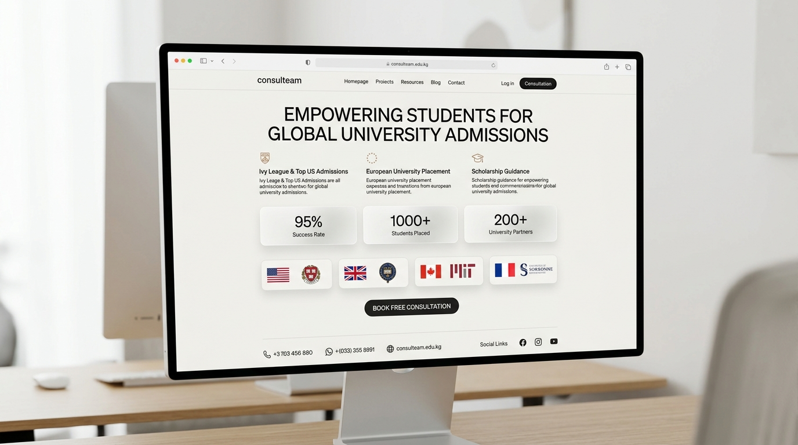
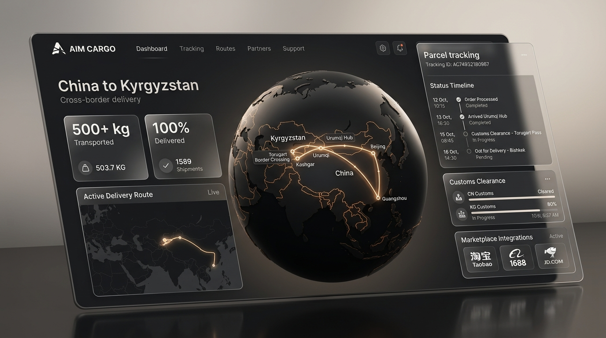

I am Ariet, an 11th-grade developer and entrepreneur based in Bishkek, Kyrgyzstan. Since 2023, I have been building software systems, AI-powered automations, and practical products that solve real-world problems for education, logistics, and businesses.
I am an 11th-grade student with big ambitions and a strong interest in Artificial Intelligence, software development, automation, and entrepreneurship.
I have been programming since 2023 and have around 3 years of experience building software projects. My long-term goal is to study at university, continue sharpening my technical and entrepreneurial skills, and make a meaningful contribution to the technological development of Kyrgyzstan.
I am interested not only in writing code, but in understanding real problems and creating useful solutions. When I work on any project, I evaluate it through five critical questions:
Automated examination checking system developed for the AALAM school network (6 schools) in Kyrgyzstan to evaluate 20,000+ offline entrance examination sheets.
How AIM Exam OCR transforms physical paper tests into verified Excel results in seconds
Physical examination answer sheets are collected from entrance test halls across 6 AALAM schools.
Batches of answer sheets are fed through high-speed sheetfed document scanners.
Scanned images are transferred directly to the processing computer running the AIM software.
Hough alignment, homography rectification, and subpixel bubble snapping dynamically detect marked choices.
Answers are scored against the official answer keys, generating scores and candidate IDs automatically.
Final ranking, scores, and analytics are exported cleanly into a formatted Excel file for the school administration.
AALAM schools conduct offline entrance examinations using physical paper answer sheets. More than 20,000 examination sheets needed to be evaluated. Checking such a vast volume manually would demand countless hours of tedious teacher labor with inevitable grading mistakes.
20,000+ paper answer sheets across 6 schools. Manual grading caused severe delays, teacher burnout, and error susceptibility.
Our 2-person team developed a custom desktop CV pipeline that digests scanner feeds, rectifies sheet tilt via homography, dynamically snaps to bubbles, and exports to Excel in real-time.
Online entrance examination platform for AALAM schools featuring anti-cheating mechanisms, tab-switch monitoring, and AI-powered multi-person camera tracking.
The platform continuously monitors window blur and tab switching. If a candidate leaves the exam page, an amber modal warning is recorded. If repeated violations occur, the system can automatically disqualify the candidate.
With camera permissions enabled, the platform streams the feed through client-side computer vision. If more than one person appears in the frame or the student looks away, an alert is triggered instantly.
Real projects solving real problems — from educational consulting web portals to cross-border China-Kyrgyzstan logistics and restaurant automation.

Developed a modern landing website for an educational consulting company helping students with applications and admission to universities abroad. Focused on clean presentation, university partner showcases, and conversion-oriented student consultation scheduling.

Founded and operated a small logistics business delivering packages from Chinese marketplaces (Taobao, 1688, Pinduoduo) to customers in Kyrgyzstan. Transported over 500 kg of parcels over one year of operations.
Cosmic Team was founded by me together with two friends to deliver modern technology solutions for restaurants in Kyrgyzstan, with a core focus on POS software.
Our work includes developing point-of-sale software, configuring dining room table mappings, integrating ESC/POS thermal printers, and installing turn-key solutions directly inside restaurants across Kyrgyzstan. Cosmic Team marks my transition from solo coding to building a tech company with real enterprise clients.
Modern AI tools are an integral part of my engineering toolkit — multiplying velocity, automating repetitive tasks, and accelerating real-world product delivery.
Leveraged for comprehensive codebase planning, architecture refactors, test verification, and automated paired development.
Used for rapid terminal debugging, deep reasoning across large codebases, and iterative backend script enhancements.
Accelerates boilerplate drafting, API client structuring, and computer vision algorithmic transformations.
Connects business databases, customer alerts, webhook pipelines, and automatic data synchronization for operations.
Combining foundational programming languages, computer vision, AI-assisted development, and practical entrepreneurial execution.
From first lines of code to building automated examination systems and co-founding real B2B tech businesses.
Founded Cosmic Team together with two friends. Developing and installing turn-key POS software solutions for restaurants across Kyrgyzstan, transitioning from solo programming to leading a business-facing technology team.
Created and operated a cross-border logistics business delivering packages from Chinese marketplaces to Kyrgyzstan. Transported over 500 kg of parcels and registered an individual business (ИП), acquiring invaluable hands-on entrepreneurship experience.
Co-developed automated examination checking for 6 AALAM schools, automating 20,000+ answer sheets. Created the AIM Exam Website with anti-tab switch detection and camera monitoring to ensure exam integrity.
Started creating practical projects, experimenting with various technologies, backend tools, APIs, and modern AI-assisted development workflows.
Started learning programming and exploring software development fundamentals with Python, web technologies, and computational problem solving.
I welcome inquiries from university admissions officers, mentors, collaborators, and tech partners. Based in Bishkek, Kyrgyzstan (UTC+6).